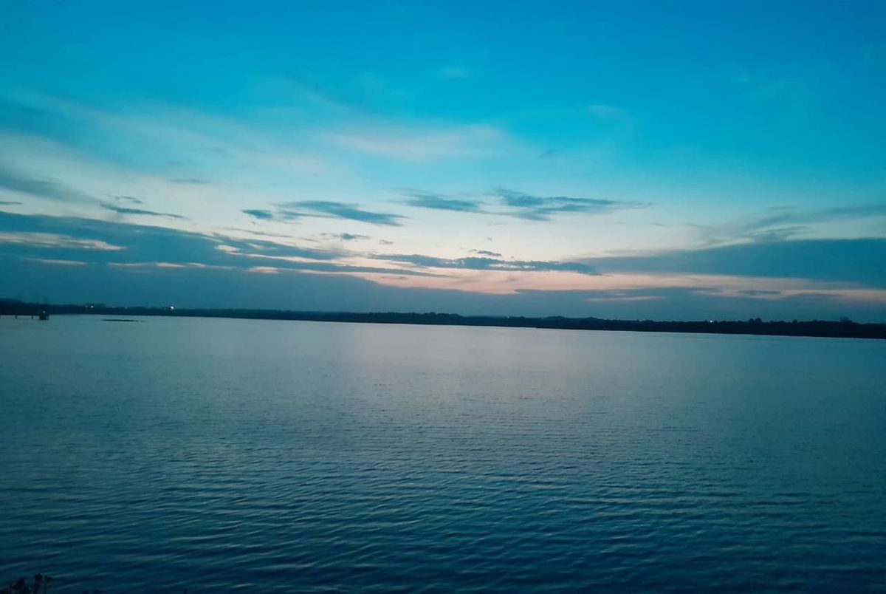
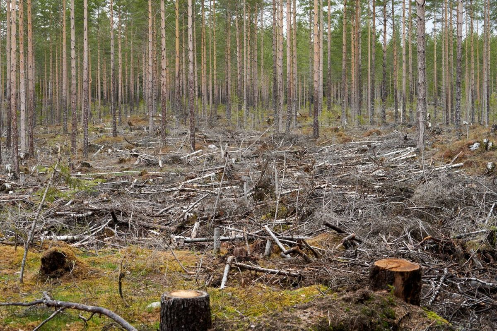
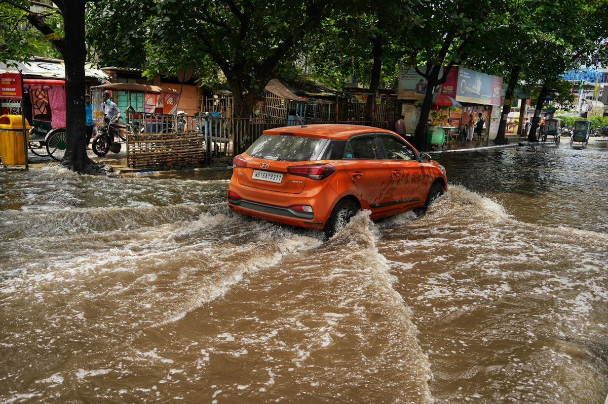
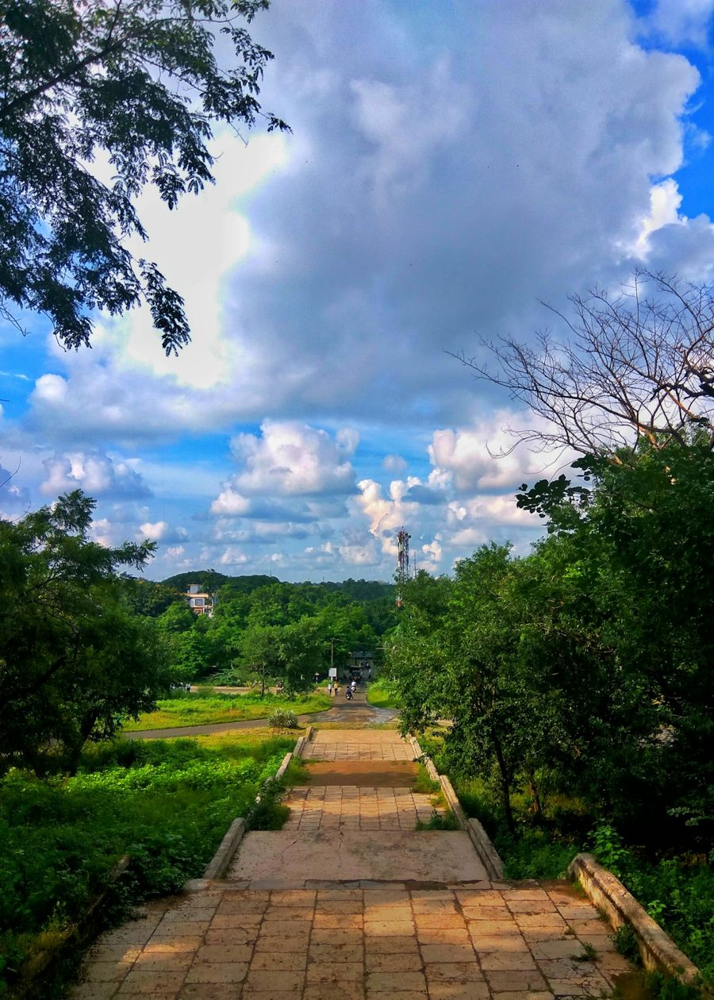
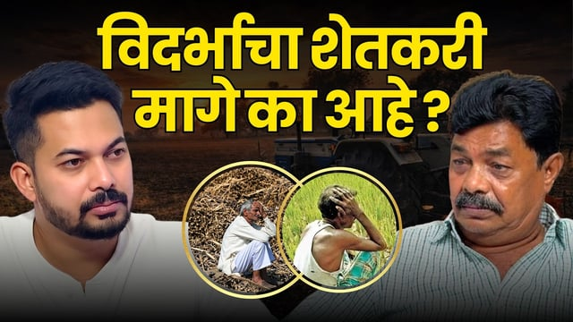

क्या नागपुर अब भी ग्रीन सिटी है, या सिर्फ कागज़ों पर हरा?
45°C+ गर्मी। 2023 की बाढ़। और हाई कोर्ट का सवाल: "हरियाली कहाँ है?"
 सागर खापरे · 28 नवंबर 2026 · 5 मिनट
सागर खापरे · 28 नवंबर 2026 · 5 मिनट
हम बचपन से नागपुर को ग्रीन सिटी कहते आए हैं: टाइगर कैपिटल, ऑरेंज सिटी, पेड़ों से भरी चौड़ी सड़कें। लेकिन 2026 में तस्वीर कुछ और है।
गर्मी 45°C पार कर गई। सड़कों, सीवर लाइनों और इमारतों के लिए पुराने पेड़ काटे जा रहे हैं। और जून में, बॉम्बे हाई कोर्ट की नागपुर बेंच ने हमारी एक व्यस्त सड़क के बारे में सीधा सवाल पूछा: हरियाली कहाँ है?
इस रविवार मैं Green Nagpur की Influencers Meet में जा रहा हूँ। जाने से पहले, क्या गलत हो रहा है और मैं वहाँ क्या पूछने वाला हूँ, सब यहाँ है।
15 किलोमीटर दूर पौधा लगाने से मेरी गली को उसकी छाँव वापस नहीं मिलती।
मैंने IT में 15 साल बिताए हैं। सॉफ्टवेयर में अगर आप कुछ ज़रूरी डिलीट कर देते हैं, तो कहीं और कुछ भी जोड़कर उसकी "भरपाई" नहीं करते। जो तोड़ा है, उसे ठीक करते हैं। पेड़ों के साथ भी यही है। आपके घर के बाहर वाला पेड़ ही आपके घर को ठंडा रखता है।
मैं विकास के खिलाफ नहीं हूँ। नागपुर को मेट्रो, सड़कें और ड्रेनेज चाहिए। लेकिन जो विकास शहर को और गर्म करे और जल्दी डुबोए, वो विकास नहीं है। वो एक बिल है जो हमारे बच्चे चुकाएँगे।
अपने पॉडकास्ट पर मैं गेस्ट के मैदान पर जाकर खुद चीज़ें चेक करता हूँ। इसलिए इस रविवार मैं सुनूँगा, कड़े सवाल पूछूँगा, और ऐसे समाधान लेकर आऊँगा जो आप सच में अपना सकें।
— सागर खापरे
समस्या 1: पेड़ कागज़ों पर, सड़कों पर नहीं
अभी सबसे बड़ी लड़ाई लंदन स्ट्रीट की है। जून 2026 में जस्टिस अनिल किलोर और जस्टिस राज वाकोडे की बेंच ने सवाल उठाया कि इस प्रोजेक्ट के लिए पेड़ कैसे काटे गए और बदले में "compensatory" पौधे कैसे लगाए गए।
आँकड़े NMC के हलफनामे से, जैसा The Live Nagpur और The Hitavada ने रिपोर्ट किया।
कोर्ट की बात सीधी थी: कहीं और पेड़ लगाने से उस इलाके का संतुलन वापस नहीं आता जहाँ बड़े पेड़ काटे गए। कोर्ट ने संयुक्त जाँच का आदेश दिया और कहा कि अगर जगह मिले तो उसी इलाके में 1,000 और पेड़ लगाने होंगे। अगस्त में लोगों ने उसी सड़क पर पेड़ों से लिपटकर चिपको जैसा प्रदर्शन किया।

बात सिर्फ एक सड़क की नहीं है:
- आमराई, एयरपोर्ट के पास: NMC ने सीवर लाइन के लिए करीब 60 पेड़ काटने का प्रस्ताव रखा। कुछ पेड़ 93 साल तक पुराने हैं, और तीन हेरिटेज पेड़ हैं।
- अजनी वन: कुछ साल पहले इंटरमॉडल स्टेशन की योजना से डर था कि चरणों में 40,000 तक पेड़ कट सकते हैं। लोगों ने विरोध किया और 2022 में टेंडर रद्द हुआ। इस इलाके पर अब भी नज़र है।
समस्या 2: गर्म होता शहर
मई 2026 में नागपुर ने इस सीज़न का सबसे गर्म दिन 45.5°C दर्ज किया, और विदर्भ में रातें भी करीब 30°C रहीं। कम पेड़ और ज़्यादा कंक्रीट का मतलब है कि शहर दिन भर गर्मी सोखता है और रात भर छोड़ता है।
The Hitavada में छपी NEERI की एक स्टडी के मुताबिक नागपुर का ट्री कैनोपी करीब 19.5% है, जबकि राज्य का पेड़ कानून वार्ड स्तर पर 33% हरियाली माँगता है।
"आपके घर के बाहर वाला पेड़ ही आपके घर को ठंडा रखता है।"— सागर खापरे
समस्या 3: जब बारिश को जाने की जगह न मिले

23 सितंबर 2023 को करीब 109 mm भारी बारिश ने शहर के बड़े हिस्से को डुबो दिया। चार लोगों की जान गई और करीब 10,000 घर प्रभावित हुए। जुलाई 2025 में तीन दिन की बारिश के बाद अंबाझरी और गोरेवाड़ा तालाब फिर ओवरफ्लो के करीब पहुँच गए।
अब राज्य सरकार ने अंबाझरी डैम की सुरक्षा और नाग नदी के काम के लिए ₹70 करोड़ मंज़ूर किए हैं, जिसमें करीब 5 km नदी को चौड़ा और गहरा करना शामिल है। ये ज़रूरी है। लेकिन जब पूरा शहर कंक्रीट हो जाए, तो बारिश सोखने के लिए मिट्टी ही कम बचती है।
समस्या 4: पानी की कमी
ज़्यादा गर्मी मतलब ज़्यादा पानी का इस्तेमाल। कम पेड़ और पक्की ज़मीन मतलब कम बारिश का पानी ज़मीन में वापस जाता है। मानसून में बाढ़ और गर्मी में पानी की कमी, एक ही समस्या के दो पहलू हैं।
रविवार को मैं क्या पूछूँगा
| समस्या | क्या हो रहा है | मेरा सवाल |
|---|---|---|
| पेड़ कटाई | बदले के पेड़ दूर लगाए जा रहे हैं | क्या बदले के पेड़ उसी वार्ड में लगने चाहिए? |
| गर्मी | 45°C+ गर्मी, गर्म रातें | क्या नागपुर को शेड मैप और कूल रूफ मिल सकते हैं? |
| बाढ़ | 2023 की बाढ़, तालाब ओवरफ्लो के करीब | क्या ₹70 करोड़ का प्लान काफी है, और कब तक? |
| पानी | कम रिचार्ज, ज़्यादा माँग | रेनवॉटर हार्वेस्टिंग सच में काम कर रहा है, ये कौन चेक करता है? |
कौन आवाज़ उठा रहा है
नागपुर चुप नहीं है। नागरिक, वकील और एक्टिविस्ट लंदन स्ट्रीट का मामला कोर्ट तक ले गए। RJ प्रीति (@preeti_rj), जिन्होंने मुझे रविवार की मीट में बुलाया है, अजनी वन और Save Sahyadri आंदोलन के लिए आवाज़ उठाती रही हैं, और उनकी NGO Guide सीरीज़ उन लोगों को दिखाती है जो पहले से ये काम कर रहे हैं।

रविवार, 29 नवंबर 2026 · शाम 4 बजे
पूर्व विदर्भ महिला परिषद (PVMP), झाँसी रानी मेट्रो स्टेशन के पास, नॉर्थ अंबाझरी रोड, नागपुर
मेरी अगली पोस्ट समाधानों पर होगी: मैंने वहाँ क्या सुना, आप घर पर क्या कर सकते हैं, और शहर को क्या करना चाहिए।
आपकी बारी: आपके इलाके में सबसे ज़्यादा कौन सी समस्या महसूस होती है: गर्मी, बाढ़, पानी या कम होते पेड़? Instagram पर बताइए।
ये राय पसंद आई?
विदर्भ की असली कहानियाँ सुनिए।
बिना स्क्रिप्ट। बिना फ़िल्टर। नागपुर के बड़े नामों की असली कहानियाँ।

▶अगला देखें
हर हफ्ते नया एपिसोड। हर सोमवार नई राय।
स्रोत: The Live Nagpur, The Hitavada, Nagpur Today, Lokmat Times, Wikipedia (2023 Nagpur flood), Change.org, Instagram पर @preeti_rj। फोटो: Pexels और Unsplash (फ्री लाइसेंस)। जानकारी 28 नवंबर 2026 तक की।